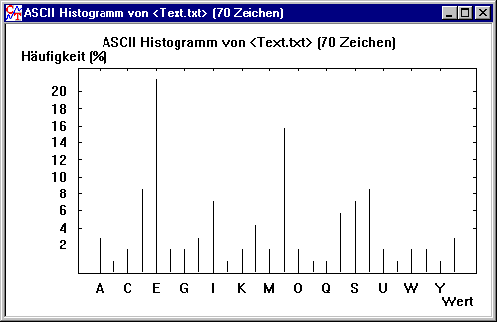

Sie erreichen diesen Dialog über den Menüeintrag Analyse \ Werkzeuge zur Analyse \ Histogramm.
Weitere Informationen zu der Bedeutung des Histogramms befinden sich unter Histogramm des Dokuments anzeigen.
In diesem Fenster wird das Histogramm eines Text- oder Hex-Dokuments ausgegeben. Beim Öffnen des Fensters wird ein Balkendiagramm ausgegeben.

Die Anzeige kann mit dem Befehl Balkendiagramm auch als Kurvendiagramm erfolgen.
In beiden Diagrammtypen kann die Linienstärke über den Befehl Linienstärke eingestellt werden.
In beiden obigen Diagrammen ist das Histogramm eines Text-Dokuments abgebildet. Man sieht zum Beispiel, dass das häufigste Zeichen ein "E" ist, das zweit häufigste ein "N".